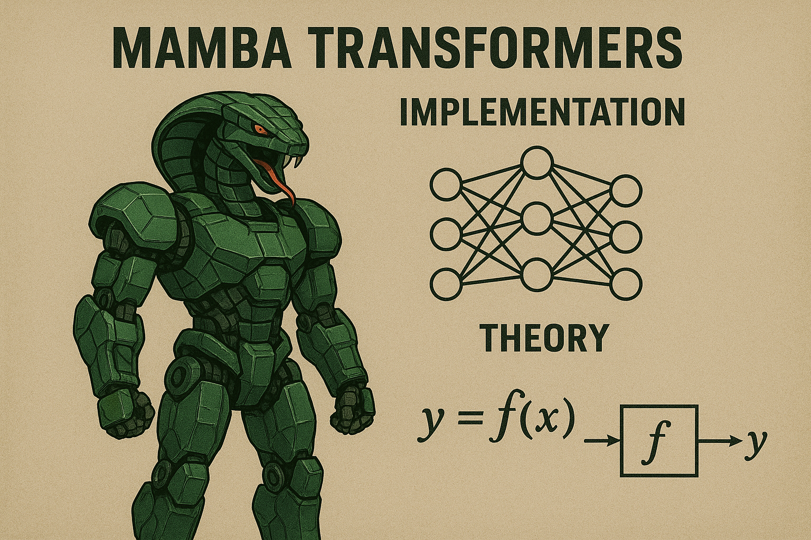

graph LR
A[Input] --> B[Embedding]
B --> C[Mamba Blocks]
C --> D[Output Projection]
D --> E[Logits]
Complete Guide to Mamba Transformers: Implementation and Theory

Introduction to Mamba
Mamba is a revolutionary architecture that addresses the quadratic complexity problem of traditional transformers through selective state space models (SSMs). Unlike transformers that use attention mechanisms, Mamba processes sequences with linear complexity while maintaining comparable or superior performance.
Key Advantages
- Linear Complexity: \(O(L)\) instead of \(O(L^2)\) for sequence length \(L\)
- Selective Mechanism: Dynamic parameter adjustment based on input
- Hardware Efficiency: Better memory usage and parallelization
- Long Context: Can handle much longer sequences effectively
Architecture Overview
Mathematical Foundation
State Space Models (SSMs)
The core of Mamba is based on continuous-time state space models:
\[ \frac{dx}{dt} = Ax(t) + Bu(t) \]
\[ y(t) = Cx(t) + Du(t) \]
Discretized version:
\[ x_k = \bar{A}x_{k-1} + \bar{B}u_k \]
\[ y_k = Cx_k + Du_k \]
Where:
- \(\bar{A} = \exp(\Delta A)\) (matrix exponential)
- \(\bar{B} = (\Delta A)^{-1}(\bar{A} - I)\Delta B\)
- \(\Delta\) is the discretization step size
Selective Mechanism
Mamba introduces selectivity by making \(B\), \(C\), and \(\Delta\) input-dependent:
B = Linear_B(x) # Input-dependent B matrix
C = Linear_C(x) # Input-dependent C matrix
Δ = softplus(Linear_Δ(x)) # Input-dependent step sizeCore Components
Selective Scan Algorithm
The heart of Mamba is the selective scan that computes:
import torch
import torch.nn as nn
import torch.nn.functional as F
from einops import rearrange, repeat
import math
def selective_scan(u, delta, A, B, C, D):
"""
Selective scan implementation
Parameters:
-----------
u : torch.Tensor
Input sequence (B, L, D)
delta : torch.Tensor
Step sizes (B, L, D)
A : torch.Tensor
State matrix (D, N)
B : torch.Tensor
Input matrix (B, L, N)
C : torch.Tensor
Output matrix (B, L, N)
D : torch.Tensor
Feedthrough (D,)
Returns:
--------
torch.Tensor
Output sequence (B, L, D)
"""
deltaA = torch.exp(delta.unsqueeze(-1) * A) # (B, L, D, N)
deltaB = delta.unsqueeze(-1) * B.unsqueeze(2) # (B, L, D, N)
# Parallel scan implementation
x = torch.zeros(B.shape[0], A.shape[-1], device=u.device)
outputs = []
for i in range(u.shape[1]):
x = deltaA[:, i] * x + deltaB[:, i] * u[:, i].unsqueeze(-1)
y = torch.einsum('bdn,bn->bd', x, C[:, i]) + D * u[:, i]
outputs.append(y)
return torch.stack(outputs, dim=1)Mamba Block Architecture
class MambaBlock(nn.Module):
"""
Mamba block implementing selective state space model
"""
def __init__(self, d_model, d_state=16, d_conv=4, expand=2):
super().__init__()
self.d_model = d_model
self.d_state = d_state
self.d_conv = d_conv
self.d_inner = int(expand * d_model)
# Input projection
self.in_proj = nn.Linear(d_model, self.d_inner * 2, bias=False)
# Convolution layer
self.conv1d = nn.Conv1d(
in_channels=self.d_inner,
out_channels=self.d_inner,
kernel_size=d_conv,
bias=True,
groups=self.d_inner,
padding=d_conv - 1,
)
# SSM parameters
self.x_proj = nn.Linear(self.d_inner, self.d_state * 2, bias=False)
self.dt_proj = nn.Linear(self.d_inner, self.d_inner, bias=True)
# Initialize A matrix (complex initialization for stability)
A = repeat(torch.arange(1, self.d_state + 1), 'n -> d n', d=self.d_inner)
self.A_log = nn.Parameter(torch.log(A))
# Output projection
self.out_proj = nn.Linear(self.d_inner, d_model, bias=False)Complete Implementation
Full Mamba Model
class Mamba(nn.Module):
"""
Complete Mamba model implementation
"""
def __init__(
self,
d_model: int,
n_layer: int,
vocab_size: int,
d_state: int = 16,
expand: int = 2,
dt_rank: str = "auto",
d_conv: int = 4,
conv_bias: bool = True,
bias: bool = False,
):
super().__init__()
self.d_model = d_model
self.n_layer = n_layer
self.vocab_size = vocab_size
# Token embeddings
self.embedding = nn.Embedding(vocab_size, d_model)
# Mamba layers
self.layers = nn.ModuleList([
ResidualBlock(
MambaBlock(
d_model=d_model,
d_state=d_state,
expand=expand,
dt_rank=dt_rank,
d_conv=d_conv,
conv_bias=conv_bias,
bias=bias,
)
)
for _ in range(n_layer)
])
# Final layer norm and output projection
self.norm_f = RMSNorm(d_model)
self.lm_head = nn.Linear(d_model, vocab_size, bias=False)
# Weight tying
self.lm_head.weight = self.embedding.weight
def forward(self, input_ids):
"""
Forward pass
Parameters:
-----------
input_ids : torch.Tensor
Input token ids (batch, seqlen)
Returns:
--------
torch.Tensor
Logits (batch, seqlen, vocab_size)
"""
x = self.embedding(input_ids)
for layer in self.layers:
x = layer(x)
x = self.norm_f(x)
logits = self.lm_head(x)
return logitsEnhanced MambaBlock Implementation
class MambaBlock(nn.Module):
def __init__(
self,
d_model,
d_state=16,
expand=2,
dt_rank="auto",
d_conv=4,
conv_bias=True,
bias=False,
):
super().__init__()
self.d_model = d_model
self.d_state = d_state
self.expand = expand
self.d_inner = int(self.expand * self.d_model)
self.dt_rank = math.ceil(self.d_model / 16) if dt_rank == "auto" else dt_rank
# Input projections
self.in_proj = nn.Linear(self.d_model, self.d_inner * 2, bias=bias)
# Convolution
self.conv1d = nn.Conv1d(
in_channels=self.d_inner,
out_channels=self.d_inner,
bias=conv_bias,
kernel_size=d_conv,
groups=self.d_inner,
padding=d_conv - 1,
)
# SSM projections
self.x_proj = nn.Linear(self.d_inner, self.dt_rank + self.d_state * 2, bias=False)
self.dt_proj = nn.Linear(self.dt_rank, self.d_inner, bias=True)
# Initialize dt projection
dt_init_std = self.dt_rank**-0.5 * self.d_model**-0.5
with torch.no_grad():
self.dt_proj.weight.uniform_(-dt_init_std, dt_init_std)
# Initialize A matrix (S4D initialization)
A = repeat(
torch.arange(1, self.d_state + 1, dtype=torch.float32),
"n -> d n",
d=self.d_inner,
).contiguous()
A_log = torch.log(A)
self.A_log = nn.Parameter(A_log)
# Initialize D parameter
self.D = nn.Parameter(torch.ones(self.d_inner))
# Output projection
self.out_proj = nn.Linear(self.d_inner, self.d_model, bias=bias)
def forward(self, x):
"""
Forward pass through Mamba block
Parameters:
-----------
x : torch.Tensor
Input tensor (B, L, D)
Returns:
--------
torch.Tensor
Output tensor (B, L, D)
"""
(B, L, D) = x.shape
# Input projections
x_and_res = self.in_proj(x) # (B, L, 2 * d_inner)
x, res = x_and_res.split(split_size=[self.d_inner, self.d_inner], dim=-1)
# Convolution
x = rearrange(x, 'b l d -> b d l')
x = self.conv1d(x)[:, :, :L] # Truncate to original length
x = rearrange(x, 'b d l -> b l d')
# Activation
x = F.silu(x)
# SSM
y = self.ssm(x)
# Gating and output projection
y = y * F.silu(res)
output = self.out_proj(y)
return output
def ssm(self, x):
"""
Selective State Space Model computation
"""
(B, L, D) = x.shape
N = self.d_state
# Extract A matrix
A = -torch.exp(self.A_log.float()) # (d_inner, d_state)
# Compute Δ, B, C
x_dbl = self.x_proj(x) # (B, L, dt_rank + 2*d_state)
delta, B, C = torch.split(
x_dbl, [self.dt_rank, N, N], dim=-1
) # delta: (B, L, dt_rank), B, C: (B, L, d_state)
delta = F.softplus(self.dt_proj(delta)) # (B, L, d_inner)
# Selective scan
y = self.selective_scan(x, delta, A, B, C, self.D)
return y
def selective_scan(self, u, delta, A, B, C, D):
"""
Selective scan implementation with parallel processing
"""
(B, L, D) = u.shape
N = A.shape[-1]
# Discretize A and B
deltaA = torch.exp(self.einsum(delta, A, 'b l d, d n -> b l d n'))
deltaB_u = self.einsum(delta, B, u, 'b l d, b l n, b l d -> b l d n')
# Parallel scan (simplified version)
x = torch.zeros((B, D, N), device=deltaA.device, dtype=deltaA.dtype)
ys = []
for i in range(L):
x = deltaA[:, i] * x + deltaB_u[:, i]
y = self.einsum(x, C[:, i], 'b d n, b n -> b d')
ys.append(y)
y = torch.stack(ys, dim=1) # (B, L, D)
# Add skip connection
y = y + u * D
return y
@staticmethod
def einsum(q, k, v=None, equation=None):
"""Helper function for einsum operations"""
if v is None:
return torch.einsum(equation, q, k)
return torch.einsum(equation, q, k, v)Supporting Components
class ResidualBlock(nn.Module):
"""Residual block with pre-normalization"""
def __init__(self, mixer):
super().__init__()
self.mixer = mixer
self.norm = RMSNorm(mixer.d_model)
def forward(self, x):
return self.mixer(self.norm(x)) + x
class RMSNorm(nn.Module):
"""Root Mean Square Layer Normalization"""
def __init__(self, d_model, eps=1e-5):
super().__init__()
self.eps = eps
self.weight = nn.Parameter(torch.ones(d_model))
def forward(self, x):
output = x * torch.rsqrt(x.pow(2).mean(-1, keepdim=True) + self.eps) * self.weight
return outputTraining and Optimization
Training Configuration
class TrainingConfig:
"""Configuration class for training hyperparameters"""
# Model architecture
d_model: int = 768
n_layer: int = 24
vocab_size: int = 50257
# Training parameters
batch_size: int = 32
learning_rate: float = 1e-4
weight_decay: float = 0.1
max_seq_len: int = 2048
# Optimization
warmup_steps: int = 2000
max_steps: int = 100000
eval_interval: int = 1000
# Hardware optimization
mixed_precision: bool = True
gradient_checkpointing: bool = TrueOptimizer Setup
def create_optimizer(model, config):
"""
Create optimizer with proper weight decay configuration
Parameters:
-----------
model : nn.Module
The model to optimize
config : TrainingConfig
Training configuration
Returns:
--------
torch.optim.AdamW
Configured optimizer
"""
# Separate parameters for weight decay
decay = set()
no_decay = set()
for mn, m in model.named_modules():
for pn, p in m.named_parameters():
fpn = f'{mn}.{pn}' if mn else pn
if 'bias' in pn or 'norm' in pn or 'embedding' in pn:
no_decay.add(fpn)
else:
decay.add(fpn)
param_dict = {pn: p for pn, p in model.named_parameters()}
optim_groups = [
{
'params': [param_dict[pn] for pn in sorted(list(decay))],
'weight_decay': config.weight_decay
},
{
'params': [param_dict[pn] for pn in sorted(list(no_decay))],
'weight_decay': 0.0
},
]
return torch.optim.AdamW(optim_groups, lr=config.learning_rate)Training Loop Implementation
class MambaTrainer:
"""Comprehensive trainer for Mamba models"""
def __init__(self, model, config, train_loader, val_loader):
self.model = model
self.config = config
self.train_loader = train_loader
self.val_loader = val_loader
self.optimizer = create_optimizer(model, config)
self.scheduler = self.create_scheduler()
self.scaler = torch.cuda.amp.GradScaler() if config.mixed_precision else None
def create_scheduler(self):
"""Create cosine annealing scheduler with warmup"""
def lr_lambda(step):
if step < self.config.warmup_steps:
return step / self.config.warmup_steps
else:
progress = (step - self.config.warmup_steps) / \
(self.config.max_steps - self.config.warmup_steps)
return 0.5 * (1 + math.cos(math.pi * progress))
return torch.optim.lr_scheduler.LambdaLR(self.optimizer, lr_lambda)
def train_step(self, batch):
"""Single training step with mixed precision"""
self.model.train()
input_ids = batch['input_ids']
targets = input_ids[:, 1:].contiguous()
input_ids = input_ids[:, :-1].contiguous()
with torch.cuda.amp.autocast(enabled=self.config.mixed_precision):
logits = self.model(input_ids)
loss = F.cross_entropy(
logits.view(-1, logits.size(-1)),
targets.view(-1),
ignore_index=-1
)
# Backward pass with gradient scaling
if self.scaler:
self.scaler.scale(loss).backward()
self.scaler.unscale_(self.optimizer)
torch.nn.utils.clip_grad_norm_(self.model.parameters(), 1.0)
self.scaler.step(self.optimizer)
self.scaler.update()
else:
loss.backward()
torch.nn.utils.clip_grad_norm_(self.model.parameters(), 1.0)
self.optimizer.step()
self.optimizer.zero_grad()
self.scheduler.step()
return loss.item()Practical Applications
Text Generation
def generate_text(model, tokenizer, prompt, max_length=100, temperature=0.8):
"""
Generate text using Mamba model
Parameters:
-----------
model : Mamba
Trained Mamba model
tokenizer : Tokenizer
Text tokenizer
prompt : str
Input prompt
max_length : int
Maximum generation length
temperature : float
Sampling temperature
Returns:
--------
str
Generated text
"""
model.eval()
# Tokenize prompt
input_ids = tokenizer.encode(prompt, return_tensors='pt')
with torch.no_grad():
for _ in range(max_length):
# Forward pass
logits = model(input_ids)
# Sample next token
next_token_logits = logits[:, -1, :] / temperature
probs = F.softmax(next_token_logits, dim=-1)
next_token = torch.multinomial(probs, num_samples=1)
# Append to sequence
input_ids = torch.cat([input_ids, next_token], dim=1)
# Check for end token
if next_token.item() == tokenizer.eos_token_id:
break
return tokenizer.decode(input_ids[0], skip_special_tokens=True)
# Usage example
# prompt = "The future of artificial intelligence is"
# generated = generate_text(model, tokenizer, prompt)
# print(generated)Document Classification
class MambaClassifier(nn.Module):
"""Mamba-based document classifier"""
def __init__(self, mamba_model, num_classes):
super().__init__()
self.mamba = mamba_model
self.classifier = nn.Linear(mamba_model.d_model, num_classes)
def forward(self, input_ids, attention_mask=None):
"""
Forward pass for classification
Parameters:
-----------
input_ids : torch.Tensor
Input token ids
attention_mask : torch.Tensor, optional
Attention mask for padding tokens
Returns:
--------
torch.Tensor
Classification logits
"""
# Get Mamba features
hidden_states = self.mamba.embedding(input_ids)
for layer in self.mamba.layers:
hidden_states = layer(hidden_states)
hidden_states = self.mamba.norm_f(hidden_states)
# Global average pooling
if attention_mask is not None:
mask = attention_mask.unsqueeze(-1).expand_as(hidden_states).float()
pooled = (hidden_states * mask).sum(1) / mask.sum(1)
else:
pooled = hidden_states.mean(1)
# Classification
logits = self.classifier(pooled)
return logitsPerformance Optimization
Memory Optimization
class OptimizedMamba(Mamba):
"""Memory-optimized Mamba with gradient checkpointing"""
def __init__(self, *args, **kwargs):
super().__init__(*args, **kwargs)
self.gradient_checkpointing = True
def forward(self, input_ids):
"""Forward pass with optional gradient checkpointing"""
x = self.embedding(input_ids)
# Use checkpointing for memory efficiency
for layer in self.layers:
if self.gradient_checkpointing and self.training:
x = torch.utils.checkpoint.checkpoint(layer, x)
else:
x = layer(x)
x = self.norm_f(x)
logits = self.lm_head(x)
return logits
def profile_memory(model, input_size):
"""
Profile memory usage of the model
Parameters:
-----------
model : nn.Module
Model to profile
input_size : tuple
Input tensor size
Returns:
--------
float
Peak memory usage in GB
"""
dummy_input = torch.randint(0, model.vocab_size, input_size)
torch.cuda.reset_peak_memory_stats()
with torch.cuda.amp.autocast():
output = model(dummy_input)
loss = output.sum()
loss.backward()
peak_memory = torch.cuda.max_memory_allocated() / 1024**3 # GB
print(f"Peak memory usage: {peak_memory:.2f} GB")
return peak_memoryPerformance Comparison
Complexity Analysis
| Metric | Transformer | Mamba |
|---|---|---|
| Time Complexity | \(O(L^2d)\) | \(O(Ld)\) |
| Memory Complexity | \(O(L^2)\) | \(O(L)\) |
| Parallelization | High (attention) | Medium (selective scan) |
| Long Context Scaling | Quadratic | Linear |
Benchmarking Implementation
def benchmark_models():
"""
Compare Mamba vs Transformer performance across sequence lengths
Returns:
--------
dict
Benchmark results containing memory and time measurements
"""
sequence_lengths = [512, 1024, 2048, 4096, 8192]
results = {
'mamba': {'memory': [], 'time': []},
'transformer': {'memory': [], 'time': []}
}
for seq_len in sequence_lengths:
# Benchmark Mamba
mamba_model = Mamba(d_model=768, n_layer=12, vocab_size=50257)
mamba_memory, mamba_time = benchmark_single_model(mamba_model, seq_len)
# Benchmark would require transformer implementation
# transformer_model = GPT2Model.from_pretrained('gpt2')
# transformer_memory, transformer_time = benchmark_single_model(transformer_model, seq_len)
results['mamba']['memory'].append(mamba_memory)
results['mamba']['time'].append(mamba_time)
# results['transformer']['memory'].append(transformer_memory)
# results['transformer']['time'].append(transformer_time)
return results
def benchmark_single_model(model, seq_len):
"""
Benchmark a single model for memory and time
Parameters:
-----------
model : nn.Module
Model to benchmark
seq_len : int
Sequence length to test
Returns:
--------
tuple
(memory_usage_gb, time_seconds)
"""
import time
batch_size = 8
vocab_size = getattr(model, 'vocab_size', 50257)
input_ids = torch.randint(0, vocab_size, (batch_size, seq_len))
# Memory benchmark
torch.cuda.reset_peak_memory_stats()
start_time = time.time()
with torch.cuda.amp.autocast():
output = model(input_ids)
loss = output.logits.mean() if hasattr(output, 'logits') else output.mean()
loss.backward()
end_time = time.time()
memory_used = torch.cuda.max_memory_allocated() / 1024**3 # GB
time_taken = end_time - start_time
return memory_used, time_takenAdvanced Extensions
Multi-Modal Mamba
class MultiModalMamba(nn.Module):
"""Multi-modal Mamba for text and vision processing"""
def __init__(self, text_vocab_size, d_model, n_layer):
super().__init__()
# Text processing
self.text_embedding = nn.Embedding(text_vocab_size, d_model)
# Vision processing
self.vision_encoder = nn.Linear(768, d_model) # From vision transformer
# Shared Mamba layers
self.mamba_layers = nn.ModuleList([
MambaBlock(d_model) for _ in range(n_layer)
])
# Modality fusion
self.fusion_layer = nn.Linear(d_model * 2, d_model)
def forward(self, text_ids, vision_features):
"""
Process multi-modal inputs
Parameters:
-----------
text_ids : torch.Tensor
Text token ids
vision_features : torch.Tensor
Vision features from encoder
Returns:
--------
torch.Tensor
Fused multi-modal representations
"""
# Process text
text_embeds = self.text_embedding(text_ids)
# Process vision
vision_embeds = self.vision_encoder(vision_features)
# Combine modalities
combined = torch.cat([text_embeds, vision_embeds], dim=-1)
fused = self.fusion_layer(combined)
# Process through Mamba
for layer in self.mamba_layers:
fused = layer(fused)
return fusedSparse Mamba Implementation
class SparseMamba(MambaBlock):
"""Sparse version of Mamba with reduced connectivity"""
def __init__(self, *args, sparsity_ratio=0.1, **kwargs):
super().__init__(*args, **kwargs)
self.sparsity_ratio = sparsity_ratio
self.register_buffer('sparsity_mask', torch.ones(self.d_inner, self.d_state))
# Initialize sparse connectivity
self._initialize_sparse_mask()
def _initialize_sparse_mask(self):
"""Initialize sparse connectivity pattern"""
# Random sparsity pattern
num_connections = int(self.d_inner * self.d_state * (1 - self.sparsity_ratio))
flat_mask = torch.zeros(self.d_inner * self.d_state)
indices = torch.randperm(self.d_inner * self.d_state)[:num_connections]
flat_mask[indices] = 1
self.sparsity_mask = flat_mask.view(self.d_inner, self.d_state)
def ssm(self, x):
"""SSM computation with sparse connections"""
(B, L, D) = x.shape
N = self.d_state
# Apply sparsity mask to A matrix
A = -torch.exp(self.A_log.float())
A = A * self.sparsity_mask # Apply sparsity
# Rest of the SSM computation remains the same
x_dbl = self.x_proj(x)
delta, B, C = torch.split(x_dbl, [self.dt_rank, N, N], dim=-1)
delta = F.softplus(self.dt_proj(delta))
y = self.selective_scan(x, delta, A, B, C, self.D)
return yMixture of Experts (MoE) Mamba
class MambaExpert(nn.Module):
"""Individual expert in MoE Mamba"""
def __init__(self, d_model, expert_id):
super().__init__()
self.expert_id = expert_id
self.mamba_block = MambaBlock(d_model)
def forward(self, x):
return self.mamba_block(x)
class MambaMoE(nn.Module):
"""Mamba with Mixture of Experts"""
def __init__(self, d_model, num_experts=8, top_k=2):
super().__init__()
self.num_experts = num_experts
self.top_k = top_k
# Router network
self.router = nn.Linear(d_model, num_experts)
# Expert networks
self.experts = nn.ModuleList([
MambaExpert(d_model, i) for i in range(num_experts)
])
# Load balancing
self.load_balancing_loss_coeff = 0.01
def forward(self, x):
"""
Forward pass through MoE Mamba
Parameters:
-----------
x : torch.Tensor
Input tensor (batch_size, seq_len, d_model)
Returns:
--------
torch.Tensor
Output tensor (batch_size, seq_len, d_model)
"""
batch_size, seq_len, d_model = x.shape
# Flatten for routing
x_flat = x.view(-1, d_model) # (batch_size * seq_len, d_model)
# Route tokens to experts
router_logits = self.router(x_flat) # (batch_size * seq_len, num_experts)
routing_weights = F.softmax(router_logits, dim=-1)
# Select top-k experts
top_k_weights, top_k_indices = torch.topk(routing_weights, self.top_k, dim=-1)
top_k_weights = F.softmax(top_k_weights, dim=-1)
# Initialize output
output = torch.zeros_like(x_flat)
# Process tokens through selected experts
for i in range(self.top_k):
expert_indices = top_k_indices[:, i]
expert_weights = top_k_weights[:, i].unsqueeze(-1)
# Group tokens by expert
for expert_id in range(self.num_experts):
mask = expert_indices == expert_id
if mask.any():
expert_input = x_flat[mask]
expert_output = self.experts[expert_id](
expert_input.view(-1, 1, d_model)
).view(-1, d_model)
output[mask] += expert_weights[mask] * expert_output
# Load balancing loss
if self.training:
load_balancing_loss = self._compute_load_balancing_loss(routing_weights)
# This would be added to the main loss during training
return output.view(batch_size, seq_len, d_model)
def _compute_load_balancing_loss(self, routing_weights):
"""Compute load balancing loss for even expert utilization"""
# Fraction of tokens routed to each expert
expert_usage = routing_weights.sum(dim=0) / routing_weights.shape[0]
# Ideal usage (uniform distribution)
ideal_usage = 1.0 / self.num_experts
# L2 penalty for deviation from uniform usage
load_balancing_loss = torch.sum((expert_usage - ideal_usage) ** 2)
return self.load_balancing_loss_coeff * load_balancing_lossBidirectional Mamba
class BidirectionalMamba(nn.Module):
"""Bidirectional Mamba for enhanced context modeling"""
def __init__(self, d_model, d_state=16, expand=2):
super().__init__()
# Forward and backward Mamba blocks
self.forward_mamba = MambaBlock(d_model, d_state, expand)
self.backward_mamba = MambaBlock(d_model, d_state, expand)
# Fusion layer
self.fusion = nn.Linear(d_model * 2, d_model)
def forward(self, x):
"""
Bidirectional processing of input sequence
Parameters:
-----------
x : torch.Tensor
Input tensor (batch_size, seq_len, d_model)
Returns:
--------
torch.Tensor
Bidirectionally processed output
"""
# Forward direction
forward_output = self.forward_mamba(x)
# Backward direction (reverse sequence)
backward_input = torch.flip(x, dims=[1])
backward_output = self.backward_mamba(backward_input)
backward_output = torch.flip(backward_output, dims=[1])
# Combine forward and backward
combined = torch.cat([forward_output, backward_output], dim=-1)
output = self.fusion(combined)
return outputModel Analysis and Interpretability
Visualization Tools
class MambaVisualizer:
"""Visualization tools for Mamba model analysis"""
def __init__(self, model):
self.model = model
self.activations = {}
self.hooks = []
def register_hooks(self):
"""Register hooks to capture intermediate activations"""
def hook_fn(name):
def hook(module, input, output):
self.activations[name] = output.detach()
return hook
for name, module in self.model.named_modules():
if isinstance(module, MambaBlock):
self.hooks.append(
module.register_forward_hook(hook_fn(name))
)
def get_state_importance(self, input_text, layer_idx=-1):
"""
Compute importance scores similar to attention weights
Parameters:
-----------
input_text : str
Input text to analyze
layer_idx : int
Layer index to analyze
Returns:
--------
torch.Tensor
Importance scores for each position
"""
self.register_hooks()
# Forward pass
tokens = self.tokenizer.encode(input_text, return_tensors='pt')
with torch.no_grad():
output = self.model(tokens)
# Get activations from specified layer
layer_name = f'layers.{layer_idx}'
if layer_name in self.activations:
activations = self.activations[layer_name]
# Compute importance as gradient of output w.r.t. hidden states
importance = torch.autograd.grad(
output.sum(), activations, retain_graph=True
)[0]
# Normalize importance scores
importance = F.softmax(importance.abs().sum(-1), dim=-1)
self.remove_hooks()
return importance
def remove_hooks(self):
"""Remove all registered hooks"""
for hook in self.hooks:
hook.remove()
self.hooks = []
def analyze_state_space(model, input_sequence):
"""
Analyze the state space dynamics of Mamba
Parameters:
-----------
model : Mamba
Trained Mamba model
input_sequence : torch.Tensor
Input sequence to analyze
Returns:
--------
dict
Dictionary containing state analysis results
"""
# Extract state trajectories
states = []
def state_hook(module, input, output):
# Capture state evolution during selective scan
if hasattr(module, 'ssm'):
# This would require modifying the SSM to return intermediate states
states.append(module.current_state.detach())
# Register hooks
hooks = []
for module in model.modules():
if isinstance(module, MambaBlock):
hooks.append(module.register_forward_hook(state_hook))
# Forward pass
with torch.no_grad():
output = model(input_sequence)
# Remove hooks
for hook in hooks:
hook.remove()
# Analyze state dynamics
if states:
state_tensor = torch.stack(states, dim=0) # (layers, batch, seq_len, state_dim)
# Compute state change magnitudes
state_changes = torch.norm(state_tensor[1:] - state_tensor[:-1], dim=-1)
# Identify critical transition points
mean_change = state_changes.mean()
std_change = state_changes.std()
critical_points = torch.where(state_changes > mean_change + 2 * std_change)
return {
'states': state_tensor,
'state_changes': state_changes,
'critical_points': critical_points
}
return {'states': None, 'state_changes': None, 'critical_points': None}Production Deployment
Model Serving with FastAPI
from fastapi import FastAPI, HTTPException
from pydantic import BaseModel
import uvicorn
import asyncio
from typing import List, Optional
import time
app = FastAPI(title="Mamba Model API")
class GenerationRequest(BaseModel):
"""Request model for text generation"""
prompt: str
max_length: int = 100
temperature: float = 0.8
top_p: float = 0.95
num_return_sequences: int = 1
class GenerationResponse(BaseModel):
"""Response model for text generation"""
generated_texts: List[str]
generation_time: float
class MambaServer:
"""Production server for Mamba model inference"""
def __init__(self, model_path: str, device: str = "cuda"):
self.model = self.load_model(model_path, device)
self.tokenizer = self.load_tokenizer(model_path)
self.device = device
def load_model(self, model_path: str, device: str):
"""Load optimized Mamba model for inference"""
model = Mamba.from_pretrained(model_path)
model = model.half().to(device)
model.eval()
# Compile for faster inference
model = torch.compile(model, mode="max-autotune")
return model
def load_tokenizer(self, model_path: str):
"""Load tokenizer"""
# Assuming using HuggingFace tokenizer
from transformers import AutoTokenizer
return AutoTokenizer.from_pretrained(model_path)
async def generate(self, request: GenerationRequest) -> GenerationResponse:
"""Generate text asynchronously"""
start_time = time.time()
try:
# Tokenize input
input_ids = self.tokenizer.encode(
request.prompt,
return_tensors='pt'
).to(self.device)
# Generate
with torch.no_grad():
generated_sequences = []
for _ in range(request.num_return_sequences):
generated_ids = await self.generate_sequence(
input_ids,
request.max_length,
request.temperature,
request.top_p
)
generated_text = self.tokenizer.decode(
generated_ids[0],
skip_special_tokens=True
)
generated_sequences.append(generated_text)
generation_time = time.time() - start_time
return GenerationResponse(
generated_texts=generated_sequences,
generation_time=generation_time
)
except Exception as e:
raise HTTPException(status_code=500, detail=str(e))
async def generate_sequence(self, input_ids, max_length, temperature, top_p):
"""Generate a single sequence with top-p sampling"""
current_ids = input_ids.clone()
for _ in range(max_length):
# Run inference in thread pool to avoid blocking
logits = await asyncio.get_event_loop().run_in_executor(
None, lambda: self.model(current_ids)
)
# Sample next token
next_token_logits = logits[:, -1, :] / temperature
# Top-p sampling
sorted_logits, sorted_indices = torch.sort(next_token_logits, descending=True)
cumulative_probs = torch.cumsum(F.softmax(sorted_logits, dim=-1), dim=-1)
# Remove tokens with cumulative probability above threshold
sorted_indices_to_remove = cumulative_probs > top_p
sorted_indices_to_remove[..., 1:] = sorted_indices_to_remove[..., :-1].clone()
sorted_indices_to_remove[..., 0] = 0
indices_to_remove = sorted_indices_to_remove.scatter(1, sorted_indices, sorted_indices_to_remove)
next_token_logits[indices_to_remove] = -float('Inf')
# Sample
probs = F.softmax(next_token_logits, dim=-1)
next_token = torch.multinomial(probs, num_samples=1)
# Append token
current_ids = torch.cat([current_ids, next_token], dim=1)
# Check for end token
if next_token.item() == self.tokenizer.eos_token_id:
break
return current_ids
# Initialize server
# mamba_server = MambaServer("path/to/mamba/model")
@app.post("/generate", response_model=GenerationResponse)
async def generate_text(request: GenerationRequest):
"""API endpoint for text generation"""
return await mamba_server.generate(request)
@app.get("/health")
async def health_check():
"""Health check endpoint"""
return {"status": "healthy"}
# if __name__ == "__main__":
# uvicorn.run(app, host="0.0.0.0", port=8000)Distributed Training Setup
import torch.distributed as dist
from torch.nn.parallel import DistributedDataParallel as DDP
from torch.utils.data.distributed import DistributedSampler
import os
class DistributedMambaTrainer:
"""Distributed trainer for large-scale Mamba training"""
def __init__(self, model, config, train_dataset, val_dataset):
self.config = config
self.train_dataset = train_dataset
self.val_dataset = val_dataset
# Initialize distributed training
self.setup_distributed()
# Setup model
self.model = self.setup_model(model)
# Setup data loaders
self.train_loader, self.val_loader = self.setup_data_loaders()
# Setup optimizer and scheduler
self.optimizer = create_optimizer(self.model, config)
self.scheduler = self.create_scheduler()
def setup_distributed(self):
"""Initialize distributed training environment"""
dist.init_process_group(backend='nccl')
self.local_rank = int(os.environ['LOCAL_RANK'])
self.global_rank = int(os.environ['RANK'])
self.world_size = int(os.environ['WORLD_SIZE'])
torch.cuda.set_device(self.local_rank)
def setup_model(self, model):
"""Setup model for distributed training"""
model = model.to(self.local_rank)
# Wrap with DDP
model = DDP(
model,
device_ids=[self.local_rank],
find_unused_parameters=False
)
return model
def setup_data_loaders(self):
"""Setup distributed data loaders"""
train_sampler = DistributedSampler(
self.train_dataset,
num_replicas=self.world_size,
rank=self.global_rank,
shuffle=True
)
val_sampler = DistributedSampler(
self.val_dataset,
num_replicas=self.world_size,
rank=self.global_rank,
shuffle=False
)
from torch.utils.data import DataLoader
train_loader = DataLoader(
self.train_dataset,
batch_size=self.config.batch_size,
sampler=train_sampler,
num_workers=4,
pin_memory=True
)
val_loader = DataLoader(
self.val_dataset,
batch_size=self.config.batch_size,
sampler=val_sampler,
num_workers=4,
pin_memory=True
)
return train_loader, val_loader
def train(self):
"""Main distributed training loop"""
for epoch in range(self.config.num_epochs):
self.train_loader.sampler.set_epoch(epoch)
# Training
self.model.train()
train_loss = self.train_epoch()
# Validation
if self.global_rank == 0: # Only on main process
val_loss = self.validate()
print(f"Epoch {epoch}: Train Loss: {train_loss:.4f}, Val Loss: {val_loss:.4f}")
# Save checkpoint
self.save_checkpoint(epoch, train_loss, val_loss)
def train_epoch(self):
"""Train for one epoch with distributed synchronization"""
total_loss = 0
num_batches = 0
for batch in self.train_loader:
input_ids = batch['input_ids'].to(self.local_rank)
targets = input_ids[:, 1:].contiguous()
input_ids = input_ids[:, :-1].contiguous()
# Forward pass
with torch.cuda.amp.autocast():
logits = self.model(input_ids)
loss = F.cross_entropy(
logits.view(-1, logits.size(-1)),
targets.view(-1)
)
# Backward pass
self.optimizer.zero_grad()
loss.backward()
# Gradient clipping
torch.nn.utils.clip_grad_norm_(self.model.parameters(), 1.0)
self.optimizer.step()
self.scheduler.step()
total_loss += loss.item()
num_batches += 1
# Average loss across all processes
avg_loss = total_loss / num_batches
loss_tensor = torch.tensor(avg_loss).to(self.local_rank)
dist.all_reduce(loss_tensor, op=dist.ReduceOp.AVG)
return loss_tensor.item()
def save_checkpoint(self, epoch, train_loss, val_loss):
"""Save training checkpoint"""
if self.global_rank == 0:
checkpoint = {
'epoch': epoch,
'model_state_dict': self.model.module.state_dict(),
'optimizer_state_dict': self.optimizer.state_dict(),
'scheduler_state_dict': self.scheduler.state_dict(),
'train_loss': train_loss,
'val_loss': val_loss,
'config': self.config
}
torch.save(checkpoint, f'checkpoint_epoch_{epoch}.pt')Experimental Features
Adaptive Computation Time (ACT)
class ACTMamba(nn.Module):
"""Mamba with Adaptive Computation Time"""
def __init__(self, d_model, max_computation_steps=10, threshold=0.99):
super().__init__()
self.max_computation_steps = max_computation_steps
self.threshold = threshold
# Mamba layer
self.mamba = MambaBlock(d_model)
# Halting probability predictor
self.halting_predictor = nn.Linear(d_model, 1)
def forward(self, x):
"""
Forward pass with adaptive computation time
Parameters:
-----------
x : torch.Tensor
Input tensor (batch_size, seq_len, d_model)
Returns:
--------
tuple
(output, ponder_cost) where ponder_cost is regularization term
"""
batch_size, seq_len, d_model = x.shape
# Initialize states
state = x
halting_probs = torch.zeros(batch_size, seq_len, 1, device=x.device)
remainders = torch.ones(batch_size, seq_len, 1, device=x.device)
n_updates = torch.zeros(batch_size, seq_len, 1, device=x.device)
output = torch.zeros_like(x)
for step in range(self.max_computation_steps):
# Predict halting probability
p = torch.sigmoid(self.halting_predictor(state))
# Update halting probabilities
still_running = (halting_probs < self.threshold).float()
new_halted = (halting_probs + p * still_running >= self.threshold).float()
still_running = still_running - new_halted
# Update remainder for newly halted
halting_probs = halting_probs + p * still_running
remainders = remainders - p * still_running
# Weight for this step
step_weight = p * still_running + new_halted * remainders
# Apply Mamba transformation
transformed_state = self.mamba(state)
# Update output
output = output + step_weight * transformed_state
# Update state for next iteration
state = transformed_state
# Update computation counter
n_updates = n_updates + still_running + new_halted
# Check if all sequences have halted
if (halting_probs >= self.threshold).all():
break
# Ponder cost (regularization term)
ponder_cost = n_updates.mean()
return output, ponder_costHierarchical Processing
class HierarchicalMamba(nn.Module):
"""Hierarchical Mamba for multi-scale processing"""
def __init__(self, d_model, n_layer, hierarchy_levels=3):
super().__init__()
self.hierarchy_levels = hierarchy_levels
# Different Mamba blocks for different hierarchical levels
self.local_mamba = nn.ModuleList([
MambaBlock(d_model, d_state=16)
for _ in range(n_layer // hierarchy_levels)
])
self.global_mamba = nn.ModuleList([
MambaBlock(d_model, d_state=32)
for _ in range(n_layer // hierarchy_levels)
])
self.cross_hierarchy = nn.ModuleList([
nn.MultiheadAttention(d_model, num_heads=8)
for _ in range(hierarchy_levels)
])
def forward(self, x):
"""
Hierarchical processing of input
Parameters:
-----------
x : torch.Tensor
Input tensor (batch_size, seq_len, d_model)
Returns:
--------
torch.Tensor
Hierarchically processed output
"""
local_features = x
# Process at local level
for layer in self.local_mamba:
local_features = layer(local_features)
# Global processing (with downsampling)
global_features = local_features[:, ::4, :] # Sample every 4th token
for layer in self.global_mamba:
global_features = layer(global_features)
# Cross-hierarchy attention
enhanced_local, _ = self.cross_hierarchy[0](
local_features, global_features, global_features
)
return enhanced_local + local_featuresConclusion and Future Directions
This comprehensive guide has covered the implementation and practical applications of Mamba transformers, from fundamental concepts to advanced optimization techniques. The key contributions of Mamba include:
Key Advantages
Linear Complexity: Mamba achieves \(O(L)\) computational complexity compared to \(O(L^2)\) for traditional transformers, enabling efficient processing of long sequences.
Selective Mechanism: The input-dependent parameterization allows the model to dynamically focus on relevant information, improving modeling capabilities.
Hardware Efficiency: Better memory utilization and parallelization characteristics make Mamba suitable for resource-constrained environments.
Scalability: The linear scaling properties enable processing of much longer contexts than traditional attention-based models.
Implementation Considerations
- State Space Modeling: The core selective scan algorithm requires careful implementation for numerical stability
- Memory Optimization: Gradient checkpointing and mixed-precision training are essential for large-scale deployment
- Custom Kernels: Production deployments benefit significantly from optimized CUDA implementations
Future Research Directions
- Theoretical Analysis: Deeper understanding of the selective mechanism’s theoretical properties
- Architecture Improvements: Exploring hybrid architectures combining Mamba with other sequence modeling approaches
- Multi-modal Applications: Extending Mamba to vision, audio, and other modalities
- Hardware Optimization: Developing specialized hardware accelerators for selective scan operations
Practical Applications
Mamba shows particular promise for:
- Long Document Processing: Technical documents, legal texts, and scientific papers
- Time Series Analysis: Financial data, sensor measurements, and sequential predictions
- Code Generation: Software development with large codebases and long contexts
- Conversational AI: Multi-turn dialogues with extended conversation history
The Mamba architecture represents a significant advancement in sequence modeling, offering a compelling alternative to attention-based transformers with superior scalability and efficiency characteristics. As the field continues to evolve, Mamba’s linear complexity and selective processing capabilities position it as a foundation for next-generation language models and sequential AI systems.
References
@article{gu2023mamba,
title={Mamba: Linear-Time Sequence Modeling with Selective State Spaces},
author={Gu, Albert and Dao, Tri},
journal={arXiv preprint arXiv:2312.00752},
year={2023}
}
@article{gu2021efficiently,
title={Efficiently modeling long sequences with structured state spaces},
author={Gu, Albert and Goel, Karan and R{\'e}, Christopher},
journal={arXiv preprint arXiv:2111.00396},
year={2021}
}